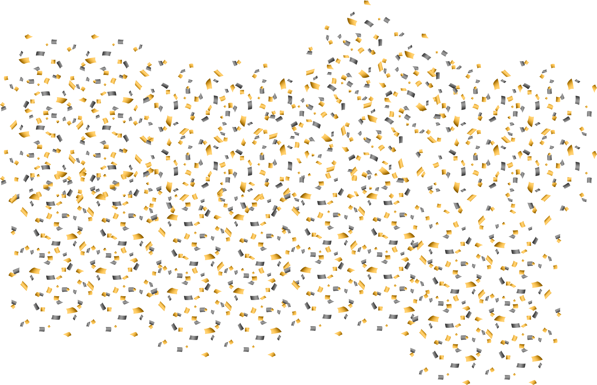

Do you like fish?
Let's watch a video about fish
Fish vs. Fishes — What’s the difference?
-
The plural of fish is usually fish.
-
When referring to more than one species of fish, especially in a scientific context, you can use fishes as the plural.
-
The zodiac sign Pisces is also often referred to as fishes.
European carp
How important are fish?
Pike
Do you prefer to look at or eat fish?
Sander
Do you like eating raw fish?
Thunnus
How important are fish in the food culture of your country?
Trout
Why do you think eating fish is good for you?
King mackerel
Do you have a favourite fish dish or seafood restaurant?
European eel
Do you think all fish are edible? Would you like to try every species?
Takifugu
Have you tried the great British delicacy fish and chips?
British delicacy fish and chips
Do you like going to fish markets?
What biological features make a fish a fish?
European perch
What part do fish play in the non-food culture of your country?
Wels catfish
Do you think fish make good pets?
Koi
Why are tropical fish so colourful?
Discus
Do you have a favourite book or movie about a fish or fish in general?
Marlin
What do you think a school of fish is? Do you think this is a good term?
Bluestriped Snapper
What do you think fish dream about?
Goldfish
What questions would you like to ask a fish?
Manta rays
If you were a fish, what kind would you be?
Thank you for visiting my speaking club about fish. Get a shark smile!
Shark
